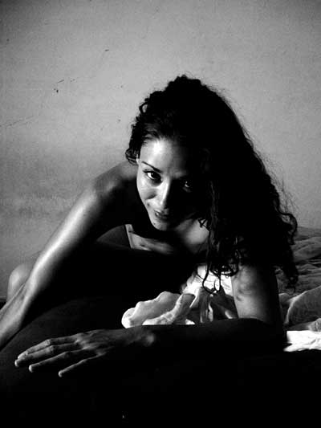
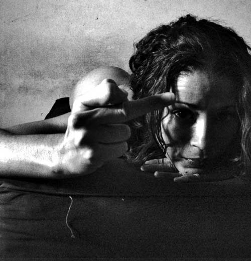

|
|||
| |

DALILA DE NUEVO
Realmente extraño a Dalila. Su ropa sigue en el armario, en una
gaveta están sus zapatos, su perfume en la cómoda, sus collares,
el cepillo sucio y rastrillando aún numerosas hebras, junto a todo
tipo de juguetes para acomodar su belleza. Todo se me revela como un signo.
Ella nunca fue indecisa. Ni siquiera al vestirse hacía el cómico
espectáculo de cambiarse varias veces, o de preguntarme si lucía
bien. Simplemente se ponía algo. Y siempre lucía atractiva.
Todo sigue aquí. ¿Qué estará usando ahora
entonces? De habérselo querido llevar hubiera podido venir por
la mañana, cuando yo no estuviera. Me imagino a mí mismo un día
cualquiera, llegando del trabajo. Abrir la puerta y soltar la mochila
sobre la mesa. Ir al refrigerador y tomar agua, luego al baño para
desecharla, cual si hubiese un conducto directo de un extremo a otro de
mi cuerpo. Pasar por el cuarto y notar con sorpresa estúpida (como
quien llega a su casa y después de cumplir su rutina descubre que
le han robado el televisor, cuando toma el control remoto) que las cosas
más evidentes, que me habían acompañado por años
ya, han desaparecido. Pero están aquí. Regadas por todas
partes. Envolviéndome en una maraña de hilos invisibles.
Como aquel cepillo, ahogándose en cabellos finos y rubios. Estoy
atrapado en el capullo de una araña.
Es un signo inequívoco. Aun no he desaparecido por completo. Cuando alguien le disgustaba lo convertía, como por magia, en un fantasma. Podía pasar a su lado o incluso dirigirle la palabra. Ella lo ignoraba con tal seguridad, que el espectro se desvanecía en un aire de transparencias. Por mi parte, estos trances me ponían en un cepo de incomodidad. Dalila entonces me sonreía sin sarcasmo. Y actuaba con tal naturalidad, que a veces, me daba espanto. ¿Puede que me espere esa suerte? Me pregunto quién sería yo, si finalmente pasara a ser uno más de ese más bien poblado limbo de desconocimiento. Para ella nadie, está claro. Pero ¿y para mí mismo? (abrir nota +)
-----------
Me he masturbado dos veces ya.
Me duele ligeramente un costado. Como si hubiese corrido unas pistas.
Es un problema que antes no tenía. Ahora, de vez en cuando, siento
ese dolor. Me quedó tendido en la cama. Espero que así,
en completa inmovilidad, se me pase el malestar.
Proyecto en el cuarto mis movimientos, como si se tratase de una película.
Imagino que me levanto. Me observo en el espejo desde la cama. Deambulando
por el cuarto, hablando conmigo mismo como un loco. Pero las palabras
no me llegan. Farfullo en un idioma ininteligible. Voy de un lado a otro,
intentando deshacerse de la maraña de pelos que me rodea. Pero
estoy como un delfín atrapado en la red de algún pescador,
con cada movimiento me enredo más y más. Ya empieza faltarme
el aire. Tengo pocos minutos para resolver este acertijo de nudos y llegar
a la superficie. Aire, aire. Una uña aguda me roza
la espalda. Siento un escalofrío que me congela. Uno vello firme,
pero sedoso, acaricia mi nuca, y la uña amenaza con hundirse
en mi piel. Estoy demasiado asustado para mirar, incluso para recordar
que me estoy asfixiando. Estoy de vuelta a la cama. No he hecho nada.
Pero me levanto de nuevo, y a través del espejo veo a un monstruo
de espalda negra y velluda. Se ha encaramado en mis hombros. Grito. Y
algo me ha atrapado en su red. Es una pesadilla, seguro. Intento convertir
aquel sueño en algo agradable. Pienso en Dalila. Me vuelvo. El
sexo de Dalila contra mi nariz. Ese era el pelo que sentía en mi cuello. Qué suerte. Sus piernas comprimen
los flancos de mi cabeza, me cubren los hombros y rozan mi espalda. Aún
siento un pinchazo en la columna, como si la uña de metal no se
hubiese nunca retirado de allí. Me espera el horror. Lo sé.
Pero alzo la vista de todas formas, temblando, inducido por un morbo insano.
Sobre mí, suspendida del techo por un amasijo de cordones blancos,
está Dalila. Pero sus manos son delgadas, angulosas y negras, como
las patas de una araña. Nacen a ambos lados del torso. Más
arriba de su abdomen no hay senos, sino unas bandas oscuras
sorteadas por pliegues, que parecen piezas de armadura. Finalmente
la uña se entierra. Chorros de semen brotan de la herida. Lanzo un grito. Ella ríe a carcajadas. Se pliega con elasticidad. Su boca cae y hace víctima en mi espalda. Bebe. Estoy de vuelta en la cama. No he hecho nada.
Me veo a través del espejo. Tendido en el suelo. Ahora completamente
envuelto en un capullo de hilos blancos. Dalila me susurra cosas hermosas,
que no puedo organizar. Es algo de que me va a llevar al zoológico
cuando crezca. Que me van a gustar los animales. Y luego al acuario, donde
hay unos peces grandes que se llaman delfines, que respiran aire como
nosotros. Y hacen un show, que brincan y hacen monerías. Me quedo
dormido, mientras ella suavemente me chupa las venas. Y cada vez que retrae
la boca, me dice algo hermoso. Después me canta. Se ha aburrido
de chuparme, así que me canta. Y me quedó dormido de una
vez. Estoy de vuelta en la cama. No he hecho nada.
-----------
Estoy tendido sobre la cama. Pienso. Hay una forma de evitarlo. Esconder
sus cosas. Todo. Recoger cada una de sus pertenencias y esconderlas donde
no pueda hallarlas. Sólo así evadiré ese salto dimensional
entre la presencia y la nada.
Me levanto. Me veo a mi mismo a través del espejo. Imagino que me levanto. Proyecto en el cuarto mis movimientos, como si se tratase de una película. Me acerco a la cómoda y valoro qué tiene más importancia. Qué se llevaría primero, porque eso es lo que debo enterrar más profundo. El cepillo, sí. Su cepillo. Tiene el pelo malo. Pasamos horas buscando un cepillo que no le hiciera daño. (abrir nota +)
-----------
Recuerdo que estábamos en 5ta y 42. Habíamos ya caminado
dos veces todo el complejo de arriba a abajo. Empezaba a sentirme realmente
molesto con aquel itinerario azaroso. Y sobre todo temía que se
enamorara de algún par de zapatos, o de alguna blusa y que me dejara
sin dinero para las cervezas. Salir de compras con una mujer es muy peligroso.
Pero ella parecía muy concentrada, buscando el cepillo de pelo
perfecto.
- Este tiene las celdas muy duras. - Se volvió. - Además
vale nueve dólares.
Saqué cuentas. Demasiado. Tres cervezas menos. Un horror.
Le pidió otro a la tendera, que se lo trajo solícitamente.
- No has pensado que si dejan a todo el mundo pasarse los cepillos por
el pelo como haces tú, pueden tener piojos o tiña. - le
comenté a Dalila, mientras probaba el cepillo. Detrás del
mostrador la tendera me miró con hostilidad.
- Este tampoco, es muy... muy...- se volvió hacía mí.
- Pruébalo.
- Da igual. Yo no sé de esas cosas.
- Pudieras ayudarme más.
- Si te vas a poner brava con lo que respondo, para que me preguntas
en primer lugar. Yo no sé un carajo de cepillos.
- Tienes pelo.
- Como si no lo tuviera. Sabes en qué estoy pensando. No es en el cepillo
en tu mano, sino en las cervezas allá afuera, en la dispensada.
Así que acaba con la jodedera del cepillo, cómprate un peine
si quieres, y vamos a tomarnos unas frías, anda.
- Pues tu dispensada va a tener que esperar hasta que encuentre algún
cepillo que me guste. Podría mostrarme aquel - dijo volviéndose
hacia la tendera. - ¿Qué te parece este? - dijo mostrándome
otro que la señora le había extendido. Hice una mueca.
- Para salir de compras mejor llevas a una amiga. - dijo la tendera. -
Los hombres son fatales en estos trances.
- ¿Quién te pidió tu opinión? - le espeté. Y ella me carbonizó con una mirada de psicópata
incendiaria. - Esto no es asunto tuyo. Tú traes el peine y te vas.
- No es un peine, es un cepillo. - Me dijo y se retiró del mostrador.
- A quién le importa.
- No seas así. Sólo quiere ayudar. - me dijo Dalila.
- No hace falta tanta ayuda, no tanta. Acaso es Calviño para estar
dando consejos.
- Mi amor, pero que carácter tú tienes. - Dijo la tendera
desde el fondo.
- ¿Sabes?, voy a obviar tus comentarios. Voy a obviar tu presencia.
No sé ni con quién estoy hablando. Debo estar loco y hablando
sólo, porque aquí no hay ninguna otra persona.
- No eres bueno en eso. Te lo tomas muy a pecho. - Me dijo Dalila. - Este
tampoco me gusta. - Dictaminó. Lo manoseó unos segundos
más y lo devolvió a la tendera. Sólo faltaba uno
por probar. Valía trece dólares. Eso equivalía a
siete cervezas menos. No estaba dispuesto a pagar tanto. Yo lo sabía,
Dalila lo sabía, hasta la tendera debió adivinarlo por la
cara que puse cuando Dalila le pidió que se lo alcanzara, para
verlo. La mujer lo trajo y lo puso sobre el mostrador, no sin antes dirigirme
otra andanada de bombas incendiarias, que menudearon a mi alrededor chamuscándome
la autoestima.
- Deja el puñetero cepillo y vámonos.
- ¿Qué?
- Que dejes el puñetero cepillo, así - dije arrebatándoselo
de las manos y poniéndolo de golpe sobre el mostrador de vidrio,
que tembló sensiblemente - y vámonos.
- ¿Qué te pasa? No puedes tratarme así.
Vi como la tendera salía del mostrador y se perdía por una
puerta lateral. No le presté más atención a ese detalle.
- Claro que puedo. Eh. Ya lo hice. Ahora nos vamos.
- No voy a ningún lado contigo. Yo quiero mi cepillo. - Y recogió
la maldita cosa del mostrador.
- Te dije que...
- No pueden hacer este espectáculo. - Advirtió una voz de
bajo a mis espaldas. Me volví y me encontré súbitamente
frente a un guardia de seguridad. La tendera estaba parada un par de metros
detrás. - Aquí no queremos este tipo de discusiones. Ahora
por favor acompáñeme a la salida.
Medí la estatura y los músculos del hombre. Al un lado del
cinto le colgaba una arma lustrada. Calculé mis probabilidades
de supervivencia: tendían a cero. Fue un sentimiento material,
algo más profundo que lo instintivo, algo que se desplazaba en
mi piel de un lado a otro diciendo: obedece o estás muerto, chama.
Salimos acompañados por la tendera y el guardia. Nos condujeron
y dejaron en la puerta como a ovejitas.
- ¡Mierda! Quiero esas cervezas.
Dos horas después Dalila y yo estábamos riendo, algo borrachos
ya. Dalila tenía aún el cepillo en la mano. Si hubiéramos
querido robarlo, no nos hubiera salido tan bien.
-----------
Le quito las hebras cuidando no dejar ni una. Si se va a enterrar algo,
mejor que esté limpio. Súbitamente, el cepillo cae de mis
manos. No lo he dejado caer, ha caído por sí mismo. Fue como
si atravesara mis dedos incorpóreos. Me detengo aturdido ante esta
novedad. El cepillo descansa donde aterrizó. Aproximo mi mano, pero
no puedo recogerlo. Mis dedos pasan alrededor de su contorno como si fuera
una ilusión. Algo dentro de mí explota en llanto. No hay tiempo.
No te queda mucho tiempo.
Me abalanzó sobre la cómoda e intento abrazar de lleno todos
los frascos y pomos. Quiero estrecharlos contra mi pecho. Evitar que huyan
como el cepillo. Me incorporó acurrucando el aire. Todo me ha esquivado.
Se ha evadido a través de mi carne. Queda la ropa, el closet lleno
de su ropa. Me acerco a la puerta cauteloso. Estoy temblando. Ahora debo
abrir el closet, y averiguar si puedo sostener aún su ropa. De lo
contrario, estoy perdido...
Y de vuelta en la cama. No he hecho nada.

Me veo a mi mismo a través del espejo. Proyecto mentalmente mi imagen
en el cuarto. Deambulando por el cuarto, hablando conmigo mismo como un
loco. Pero las palabras no me llegan. Farfullo en un idioma ininteligible.
Voy de un lado a otro, intentando deshacerse de la maraña de pelos
que me rodea. Estoy envuelto en una red de cabellos. Y Dalila, a lo lejos,
sonríe complacida. No puedo escapar. Soy como una marioneta. Sus
cosas me rodean como un recordatorio amenazador. Como las opresivas ruinas
de un antiguo imperio. Quién puede vivir sin su gloria. Quién
entre sus ruinas.
Si tan sólo pudiéramos retroceder un par de jugadas. Como
hacen los ajedrecistas inexpertos. Entonces ¿qué?
